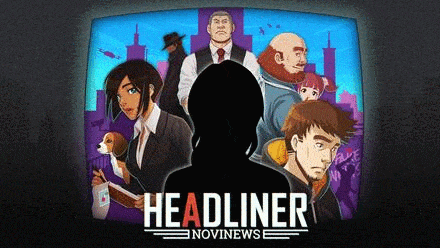

Headliner: NoviNews
Headliner: NoviNews
Detalhes
|  | |
| Tempo de jogo | Não Jogado |
| Última Atividade | Nunca |
| Adicionado | 02/04/2025 18:03:05 |
| Modificado | 02/04/2025 18:04:07 |
| Status de Conclusão | Not Played |
| Biblioteca | Itch.io |
| Fonte | itch.io |
| Plataforma | PC (Windows) |
| Data de Lançamento | 26/07/2019 |
| Pontuação da Comunidade | 79 |
| Avaliação da crítica | 65 |
| Pontuação do Usuário | |
| Gênero | Adventure Indie Role-playing (RPG) Simulator Visual Novel |
| Desenvolvedor | Unbound Creations LLC |
| Editor | Unbound Creations LLC |
| Funções | Single Player |
| Links | Steam Official Itch Twitch |
| Tag | [GGDeals] Synced |
Descrição
Thanks again to everyone who supported the Racial Justice and Equality bundle, hope you are enjoying the game! As you know all profits went to charities so If you really like the game and would like to support our team, please consider also getting the game (or gifting it to someone!) on the Steam! You get a steam key and achievements, if that's up your alley! There's also the Soundtrack available, if you like our tunes :)
---------------------------------------------

A stack of news article sits on your desk, two stampers on each side - green to approve, red to reject. Your reporting team is hacking away in the background as corporate music plays through the loudspeaker. It's time to make decisions. Will you endorse nationalized healthcare, even though your love interest is worried about increased wait times? Will you demonize the new synthetic alcoholic drink, even though your boss stressed they are an important investor? Will you support current government, as tensions grow between the neighboring country?

After work, you emerge on the streets of Novistan, shaped by the very news you publish. Perhaps you will see more graffiti, angry bums or even a riot? Or perhaps you will turn the nation into peaceful utopia, filled with cameras and drones watching your every step? How will your channel address tragic events about to happen? Will you agree to meet the clandestine group of truthtellers, or stop to watch the Prime Minister's speech?
On the way home you meet with three main characters: Evie, your co-worker and immigrant, worried about her health and growing xenophobic sentiment; your brother Justin, an aspiring comedian struggling with impostor syndrome and social anxiety; finally Rudy, a single father trying to provide for his little girl and keep his store afloat, while a mega-mart opens up next door. Each day provides a glimpse into their life and how the media shapes their beliefs. 

But every Headliner deserves to relax at home from the stress of the job. Listen to the radio and unwind on the comfy couch bought with hard-earned cash, as you watch the city burn outside the window. Perhaps splurge on treats to feed your doggo? Adopt a drone? Have your brother over for dinner? Or maybe keep your doors locked, hoarding every penny, as your apartment slowly fills with piles of cash?
After good night's sleep, it's time to once again face to boss, new articles, a growing sense of responsibility, and.... power. 


* Read twice.... #FakeNews #Sad
Font License
Fonts in the game included under the Open Font License, which full text can be viewed here.